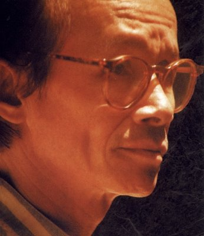

“... Tôi chỉ là tên hát rong đi qua miền đất này để hát lên linh cảm của mình về những giấc mơ đời hư ảo...". Trịnh Công Sơn không chỉ dành riêng cho nhạc, mà còn cả cho tranh và thơ nữa. Ở một lúc khác, anh tự bạch: “Mỗi bài hát của tôi là một lời tỏ tình với cuộc sống, một lời nhắn nhủ thầm kín về những nỗi niềm tuyệt vọng, và cũng là một nỗi lòng tiếc nuối khôn nguôi đối với buổi chia lìa (một ngày nào đó) cùng mặt đất mà tôi đã một thời chia xẻ những buồn vui cùng mọi người". Và có lần "bị" phỏng vấn, anh nói: "Tôi chỉ viết lời cho những bài tình khúc của tôi. Bởi một lẽ đơn giản là tôi chỉ có những mối tình lãng đãng, sương khói, hoàn toàn không có gì cụ thể. Ngày xưa dường như cả thế hệ của tôi là như vậy, yêu một mái tóc, một dáng hình, mỗi ngày chỉ cần nhìn thấy mặt nhau, thấy em qua khung cửa sổ là cả ngày thấy vui. Có khi đạp xe sau lưng em mà em không biết mình là ai, vẫn thấy vui như thường. Diễm xưa cũng là một loại tình yêu như vậy. .. Ừ, kỳ lạ vậy. Khi đang yêu nhau, nghĩa là đang mải yêu, đang đắm say với hạnh phúc. Chỉ đến khi mất mát, còn lại một mình, anh mới tự đối diện với mình mà nhận ra điều trước nay anh không hề nhìn thấy. Cũng không phải là gặm nhấm nỗi đau, mà là nhận diện nỗi đau...".
Người "hát rong" ấy cất tiếng hát: "Từng người tình bỏ ta đi như những dòng sông nhỏ", cũng là lúc yêu cuộc sống, yêu tất cả. Và từ đó cảm xúc thực sự đã đến với anh, đến với
Hãy cứ vui như mọi ngày, Mỗi ngày tôi chọn một niềm vui, Ở trọ, Một cõi đi về, Đoá hoa vô thường, Huyền thoại mẹ, Quỳnh hương, Tôi tìm tôi. .. Vâng, tình yêu thì vô cùng.
Trong bài hát Tôi tìm tôi, anh tự hỏi "Tôi là ai?” Câu hỏi không chỉ riêng cho mình, mà còn cho một vùng đất. Là ai? "Sài Gòn gánh gió trên vai mưa lầy lội. Tôi tìm chập chùng dấu vết hươu nai”. Là ai nữa? “trở lại hóa kiếp rong chơi giữa nơi này. Phố phường Sài Gòn nhớ nhớ quên quên". Và ai nữa? “Đi quanh tôi tìm hình bóng xưa quen. Đi đi tìm em cho tôi dấu vết bóng Phù Nam..." Câu hỏi cứ lặp đi lặp lại, mình đang sống đây nhưng mình đã là ai trong 300 năm trước. Lời thơ trong giai điệu như thế không phải chỉ mới có trong bài hát Tôi tìm tôi, mà trước đó đã xuất hiện trong nhiều bài hát của Trịnh Công Sơn. Anh đã rất "thi sĩ", rong chơi chữ nghĩa như thế trong thế giới âm nhạc của mình. Mỗi cõi đi về đều để lại dấu ấn. Trịnh Công Sơn có cách nói riêng, bằng lời và bằng nhạc, nói như nhà văn Bửu Ý "Lời tách riêng, đó là những đoạn thơ hoặc là truyện thơ tâm sự về giọt mưa, giọt nắng, về một vùng biển đầy ắp sự vắng mặt...” và "Ta còn chứng kiến một công cuộc thể nghiệm của tiếng Việt trên những chặng đường mới của ngôn ngữ với những kết hợp từ ngữ tài hoa, những góc độ thu hình lạ lẫm, những tri giác dày dạn nhiều tầng, khả năng tưởng tượng bay bổng".
Từ bài hát Tôi tìm tôi trở về hơn 30 năm trước, lời tách riêng vẫn là thơ, những câu thơ, đoạn thơ tài hoa và lay động. Đó là nét chấm phá, những hoa gấm cho sóng nhạc. Có thể "nhặt" ra những đoạn thơ khá hoàn chỉnh.
Mỗi ngày tôi chọn một niềm vui
Chọn những bông hoa và những nụ cười.
Tôi nhặt gió trời mời em giữ lấy
Để mắt em cười tựa lá bay (Mỗi ngày tôi chọn một niềm vui)
Những câu thơ lục bát:
Con chim ở đậu cành tre
Con cá ở trọ trong khe nước nguồn
Tôi nay ở trọ trần gian
Trăm năm về chốn xa xăm cuối trời. (Ở trọ)
Những câu thơ bốn chữ:
Nụ cười mong manh
Một hồn yếu đuối
Một bờ môi thơm
Một hồn giấy mới (Đoá hoa vô thường)
Những câu thơ năm chữ:
Em đi qua chuyến đò
Thấy con trăng nằm ngủ
Con sông là quán trọ
Và trăng tên lãng du. (Biết đâu nguồn cội)
Thơ trong nhạc Trịnh Công Sơn đã tạo nên sắc thái, tên tuổi của anh.
Không phải ai cũng có thể hiểu ngay lời thơ - ca từ của anh, nhưng giai điệu và lời thơ cứ xoắn xuýt nhau, mà độ “cảm" cứ thấm dần và sau đó mới hiểu được một phần tình ý của anh. Và có dịp đọc những câu thơ riêng lẻ, hoặc một bài thơ khá hoàn chỉnh của Trịnh Công Sơn, tôi mới cảm nhận hết sự tinh tế, nhẹ nhàng mà sâu lắng, chấm phá mà tài hoa của anh. Có người nói Trịnh Công Sơn làm thơ rất sớm trước khi sáng tác bài hát Ướt mi. Chẳng cần đặt tên cho cảm xúc của mình, nhưng đọc Chùm thơ vô đề của anh in chung trong tuyển tập thơ Chút tình với thức và những bài thơ ngắn của anh được sáng tác tại Montréal (năm 1992), có thể "nhặt" ra những câu thơ thú vị bất ngờ. Nơi này là một bài thơ tứ tuyệt:
Chỗ em ngồi ngày xưa còn ấm lắm
Anh gối lên và ngủ một giấc dài
Em có hiểu đời cho em là mộng
Để anh về cứ tưởng một là hai.
Kia là một bài thơ lục bát:
Mặc đời ô trược vừa qua
Tấm thân nhỏ nhặt người la mắng người
Buồn phiền vỡ mộng đường dài
Ta xin một góc ta ngồi với ta.
Như đã có một chỗ riêng cho người làm thơ - cô đơn mà gần gũi quá:
Đời ta nắng trải vô bờ
Chén cơm nguyệt quế em hờ hững sao
Mai sau nếu có bao giờ
Chén cơm nguyệt quế không hờ hững đâu.
Và nhân ái cả với chính mình:
Đường xa mỏng mộng vô thường
Trái tim chợt tỉnh, tôi nhường nhịn tôi.
Một bài thơ khác có tên hẳn hoi - Như lời tựa - Trịnh Công Sơn đã viết: "Tôi người thợ nặng nề vác nặng những cuồng điên", và sau đó giãi bày: "Có những bài thơ viết vì một nỗi mơ màng không uẩn khúc. Những bài thơ tuyệt vọng. Những bài thơ sáng lạnh một tình cảm rộn ràng trong phút chốc. Đừng nhớ niềm tuyệt vọng. Hãy nhớ trời cao. Mây và mây bay trên bầu trời lãng đãng. Tình yêu và gió. Gió thổi mênh mông một cuộc đời. Cuộc đời lận đận..."
Có thể, mai này ai mà biết được Trịnh Công Sơn sẽ đi đâu, về đâu? Nhưng những câu thơ của anh vẫn cứ ám ảnh tôi da diết:
Có thể mai này không có gì nặng nợ với trầm luân cuộc đời gió hàm oan cứ thổi, mà tôi đi đi mãi.
Không cần ai giữ lại một tấc lòng, tấc lòng không đáng kể, vì có bao giờ ai hiểu rõ chút vô thường vô lượng của lòng tôi”.
Những câu thơ chiêm nghiệm "Có thiên đường cạnh nỗi đau", giúp chúng ta hiểu thêm về "một góc ta ngồi với ta" của Trịnh Công Sơn - con người thi sĩ trong con người nhạc sĩ, chất hoa gấm trong sóng nhạc. Một cõi riêng như thế đã hé lộ một cách đáng yêu.
Tạp chí Sóng Nhạc, tháng 9-1998